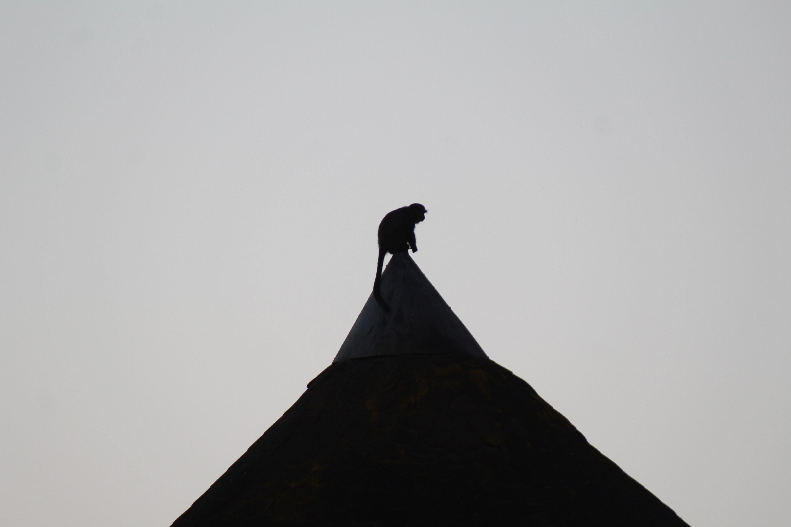

A sneak peek at my portfolio


Piazza della Signoria

Icelandic Waterfall

Jaguars in Africa

Hola, bonjour, hello, I am Camille Garnier a half Mexican, half french, born in the United States expatriate. Due to spending my whole life jumping from one country to the next, I have become a very adaptable, outgoing, and determined person. I am passionate about marketing, the environment, and anything artistic and creative. I am currently enrolled in the Global BBA program at ESSEC where I also take part in the student club ESSEC España, I am a part of the communication’s team.
Ever since I was little, I loved to bake. I have had a sweet tooth for as long as I can remember and one of the ways that I was able to satisfy my cravings was to mke myself sugary treats such as: brownies, cookies, cinnamon rolls, and much more.
The ocean is my psychologist. The only place where I can feel genuine peace is when I am underwater, and scuba diving is the one activty that lets me pronlogue my peacefulness. When I am underwter, is it easy for me to gather my thoughts and disocnnect from the real world. I swimm around for around 40 minutes in a temporary state of awe and just observe the underwater world around me, with a smile itched onto my face.
Put simply, the environment is important. Sustainabilty is the future, and for many reasons including: Environmental Quality. If we want to have a world to live in, then we need to start caring about protecting the one plnet we have... there is no planet B.
After receiving a camera for christmas 5 years ago, I have fallen in-love with photography. I prefer taking pictures of landscapes and animals, but I would also like to eventually learn how to take portraits. Now, with this being said, I present to you: